第 10 章
パラメータと式
この章では、寸法や数値をパラメータとして管理し、式でつなぐ方法を説明します。板の幅を 1 か所変えるだけで、穴の位置・個数・間隔まで付いてくるモデルを作れるようになります。また、品番や質量などをiPropertiesに保存します。この章の写真は、samples/parametric_plate.mcad で撮りました。
パラメータと iProperties は、リボンの［管理］タブの［パラメータ］パネルにあります。同じタブの［挿入］パネル（［インポート］・［エクスポート］）は第 13 章、［構成］パネルは第 11 章で説明します。
10.1 パラメータの考え方
mcad のパラメータは、3 種類あります。
| 種類 | 何か | 名前 | 式を書けるか |
|---|---|---|---|
| ［モデル パラメータ］ | スケッチの寸法（駆動寸法）と、フィーチャの数値の欄（押し出しの距離・パターンの個数など） | 自動で d0・d1…。自分の名前に変えられます | 書けます |
| ［参照パラメータ］ | スケッチの従動寸法（計測した値） | 自動の名前。変えられます | 書けません（値は計測値）。ほかの式からは読めます |
| ［ユーザー パラメータ］ | 利用者が作る値（板厚・個数・フラグなど） | 自分で付けます | 書けます |
パラメータは式で結べます。例えば、押し出しの距離をTにし、穴の位置をW / 2にすると、T や W を変えたときに、板厚も穴の位置も付いてきます。パラメータを変えると、それを読むスケッチとフィーチャがまとめて再計算されます。1 回の変更は 1 つの Undo の項目です。
10.2 パラメータの表
パラメータは、1 つの表にまとまっています。
リボンの［管理］タブ → ［パラメータ］パネル → ［パラメータ］をクリックします。
表のダイアログが開きます。上から、［モデル パラメータ］・［参照パラメータ］・［ユーザー パラメータ］の順に並びます。
図 10-1 パラメータの表。モデル パラメータの［パラメータ名］は自動の名前（ d0…）、［式］はWやH / 4のようにユーザー パラメータで決まっています。下へスクロールすると、参照パラメータとユーザー パラメータがあります。
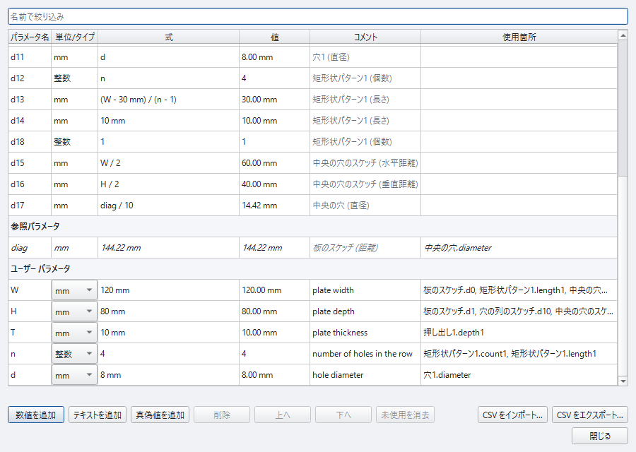
図 10-2 下の部分。 diagは従動寸法の参照パラメータ（斜体）、W・H・T・n・dがユーザー パラメータです。


| 列 | 内容 |
|---|---|
| ［パラメータ名］ | 式で使う名前。ダブルクリックで変えます |
| ［単位/タイプ］ | 値の単位（mm・deg）か型（［整数］・［真偽値］・［テキスト］）。ユーザー パラメータはコンボボックスで選べます |
| ［式］ | 値を決める式。ダブルクリックで編集します |
| ［値］ | 式の結果（読むだけ）。式が誤りのときは ! が出ます |
| ［コメント］ | ユーザー パラメータは自由なコメント。モデル・参照パラメータは、どのスケッチ・フィーチャの何の値か（例: ［板のスケッチ (距離)］） |
| ［使用箇所］ | そのパラメータを式で読んでいる欄の名前 |
表の上の［名前で絞り込み］の欄に文字を入れると、名前に合う行だけが残ります。
表は開いたまま、ビューやブラウザを操作できます（モードレス）。使い終わったら［閉じる］で閉じます。
表が開いているときに［パラメータ］をもう一度押しても、新しくは開かず、開いている表が前に出ます。［iProperties］のダイアログとは、同時に開けます。
開いたままビューを操作する
表は、ドキュメントが変わると読み直されます。表を開いたまま、スケッチの寸法を変えたり、Ctrl+Z で元に戻したりすると、表の値と式がすぐに変わります。
パラメータの表を開いたまま、ブラウザの［穴の列のスケッチ］をダブルクリックします。スケッチの編集に入っても、表は開いたままです。
水平距離の寸法（
15.00 mm）をダブルクリックし、入力欄に25 mmと入力して Enter を押します。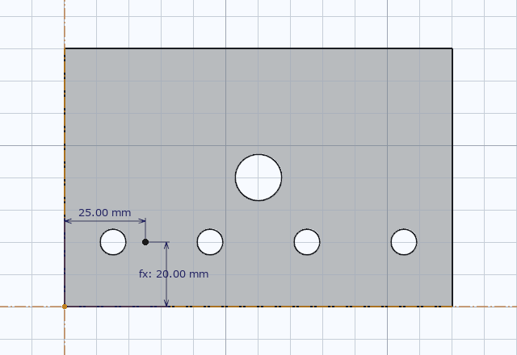
図 10-3 表を開いたまま、スケッチの寸法を 25 mmに変えたところ。ビューの穴は、スケッチを終えると新しい位置になります。表の
d9の行（［穴の列のスケッチ (水平距離)］）が25 mmに変わります。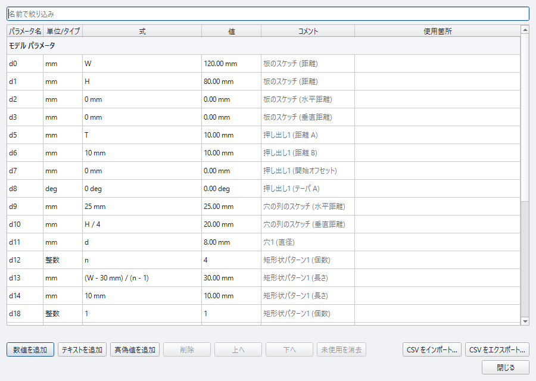
図 10-4 同じ時点の表。 d9の［式］と［値］が、スケッチの寸法に追従しています。


式を変える
変えたい行の［式］のセルをダブルクリックします。セルが入力欄になります。
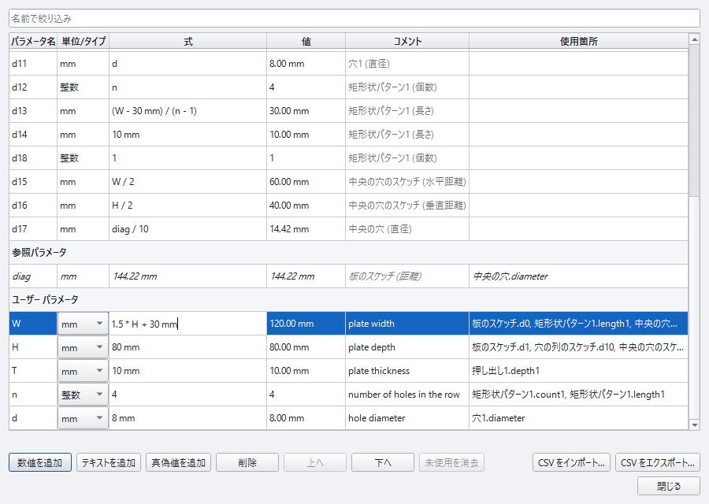
図 10-5 Wの式を編集しているところ。1.5 * H + 30 mmと入力しています。式を入力して Enter を押します。
モデルが再計算されます。［値］の列と、3D ビューの形が変わります。

式が誤っているときは、表の下に赤い字で理由が出て、セルは元の式に戻ります。

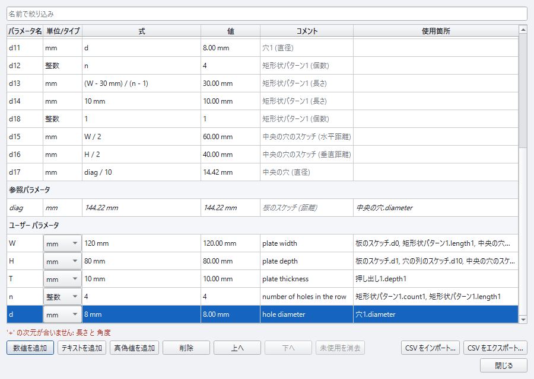
dの式を 10 mm + 5 deg にしたとき。長さと角度は足せないので、理由が出ました。10.3 ユーザー パラメータを作る
表の下の［数値を追加］・［テキストを追加］・［真偽値を追加］のどれかを押します。［ユーザー パラメータ］に新しい行（
Param1…）ができ、名前の欄が編集に入ります。名前を入力して Enter を押します。
必要なら［単位/タイプ］のコンボボックスで型を選び、［式］に値を入力します。
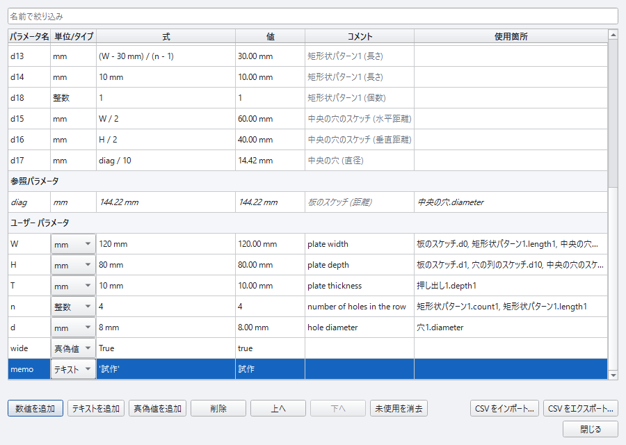
図 10-7 真偽値（ wide=True）とテキスト（memo）を追加したところ。［単位/タイプ］が［真偽値］・［テキスト］になります。必要なら［コメント］に説明を書きます。

| 選択 | 型 | 式の例 |
|---|---|---|
mm・cm・m・in・ft | 長さ | 120 mm・5 in |
deg・rad | 角度 | 45 deg |
kg・g・s・min・N・MPa・Pa・Hz・A・V・K | 質量・時間・力・圧力・周波数・電流・電圧・温度 | 7.85 g・10 A |
ul | 単位なしの数（実数） | 4 ul・0.5 |
| ［整数］ | 整数（個数など） | 4・N + 1 |
| ［真偽値］ | 真偽 | true・W > 100 mm |
| ［テキスト］ | テキスト | '試作' |
［数値を追加］で作ると、文書の長さの単位（
mm）の1になります。型を変えたときに、式が追加した直後の既定の式のままなら、新しい型の既定の式（1・1 deg・true）に替わります。単位を替えても、式の数は変わりません。式が
10 mm・10・-2.5 inのように数だけ（名前も演算も含まない）なら、次元の違う単位にも数をそのままに単位だけを付け替えます。10 mmはdegで10 deg、ulで10、［整数］で10になります（［整数］にできるのは数が整数のときだけで、10.5 mmは［整数］にできません）。mmからinのように同じ次元の単位（mmとinなど）は、パラメータごとには持てません。選んでも何も替わらず、式も表示も文書の単位のままで、コンボボックスも元の単位に戻ります。長さの表示を替えるには、リボンの［ツール］タブ →［オプション］パネル →［単位と精度］で文書の単位を替えます。W * 2のように名前や演算を含む式は書き換えません。次元が合わなくなるときは（例: 式がW * 2のパラメータZを deg にする）「式 W * 2 は長さなので、'Z' を deg にできません。先に式を直してください。」と出て、単位は元のままです。そのパラメータを読む別のパラメータ・寸法・フィーチャの欄が壊れるときも、壊れる欄の名前（B・スケッチ1.d0など）を挙げて断ります。先に式を直してから単位を選びます。テキストや真偽値の式を数の単位にするときも同じです。個数の欄（パターンの［個数］など）にも、
nやn + 1のように名前と式を書けます。個数の型は［整数］です。ユーザー パラメータを消すには、行を選んで［削除］を押します。式から読まれていないものを全部まとめて消すには［未使用を消去］です。式から読まれているパラメータは、使っている欄の名前が出て、消せません。
パラメータ 'W' は 矩形状パターン1.length1, 中央の穴のスケッチ.d15, 板のスケッチ.d0, Part1 のプロパティ で使われているので削除できません10.4 並べ替える
ユーザー パラメータは、作った順に並びます。あとから整理するには、行を選んで［上へ］・［下へ］を押します。押すたびに 1 行ずつ動き、動かした後も同じ行が選ばれたままなので、続けて押せます。表を選んだ状態で Alt+↑・Alt+↓ でも動かせます（セルの編集中は効きません）。
行は複数選んでもかまいません。連なった行は塊のまま動き、先頭・末尾に着いた行はそこで止まります。動く行が無いときは、ボタンが無効になります。
動かせるのは［ユーザー パラメータ］だけです。［モデル パラメータ］・［参照パラメータ］（寸法やフィーチャから来る行）は動かせません（これらを選んでいるとボタンは無効です）。
文書全体のパラメータと、部品ごとのパラメータは別々の並びです。行は同じ並びの中でだけ動き、もう一方の並びの行とは入れ替わりません。
文書全体の並びの末尾の行を［下へ］、部品の並びの先頭の行を［上へ］で動かそうとしても、ボタンは無効です（ポインタを載せると理由が出ます）。
名前で絞り込んでいる間は、隣の行が見えないので［上へ］・［下へ］は無効です。絞り込みを消してから動かします。
順番は文書に保存され、［元に戻す］で戻せます。［CSV をエクスポート］の行の順も、表と同じです。
10.5 式の書き方
式は、数・単位付きの数・パラメータの名前を、演算子と関数でつないだものです。Inventor のパラメータの式に近い書き方です。
| 部品 | 書き方 | 例 |
|---|---|---|
| 数 | 整数・小数・指数 | 10・2.5・1e-3 |
| 単位付きの数 | 数の直後に単位。空白は入れても入れなくてもかまいません | 10 mm・10mm・30 deg・2 in・4 ul |
| 四則・冪・括弧 | + - * / ^（冪）( ) | (W - 30 mm) / (n - 1)・2 ^ 3 |
| パラメータの参照 | 名前をそのまま書くか、${名前} | W / 2・${W} / 2 |
| 定数 | pi | 2 * pi * R |
| 比較・論理 | == != < <= > >=、and or not、true false | W > 100 mm and n >= 4 |
| 条件 | if_(条件, 真のとき, 偽のとき) | if_(wide, 10 mm, 8 mm) |
| テキスト | 引用符で囲み、+ でつなぎます | 'PLT-' + memo |
| 関数 | 内容 |
|---|---|
sin cos tan | 三角関数。引数は角度（30 deg）か、裸の数（文書の角度の単位）。結果は単位なしの数 |
asin acos atan atan2 | 逆三角関数。結果は角度 |
sqrt abs | 平方根・絶対値（単位を保ちます。sqrt(W^2 + H^2)） |
min max | 引数（2 つ以上）の最小・最大 |
round floor ceil log exp | 丸め・対数・指数。単位のない数だけを受けます。長さは割ってから使います（floor(L / 10 mm)） |
if_ | 条件で値を選びます。選ばれなかった側は計算しません |
単位が合う式だけが通ります。長さ + 長さ、長さ / 長さ（単位のない数）、長さ * 数は通りますが、
10 mm + 5 degは誤りです。数と単位の間に*・/・^を使うときは、5 N*mのように前後に空白を入れません（10 mm * Wは「10 mm 掛ける W」です）。裸の数は、欄の単位（長さの欄なら文書の単位の
mm、角度の欄ならdeg）として読みます。全角の文字（
×・÷・−・°・全角の数字）は、半角に直して読みます。式の長さは 2,000 文字までです。
//・%・属性の参照などは使えません。インチは
in（inchも可）です。分数は(1/2) * 1 inのように書きます。
式の誤りの文
| 書き方 | 表の下に出る文 |
|---|---|
10 mm + 5 deg | '+' の次元が合いません: 長さ と 角度 |
W / 0 | 'd' の式が正しくありません: 0 で割りました |
unknown_name * 2 | 名前 'unknown_name' は不明です |
d + ( | 式の構文の誤り: '(' が閉じられていません |
W の式を H、H の式を W | 循環参照: W -> H -> W |
誤りは、確定の前に拒否されます。拒否された式は文書に入らず、形は変わりません。前のフィーチャから後ろのフィーチャの値を読む（履歴の前方参照）式も、拒否されます。
10.6 従動寸法（参照パラメータ）を式で読む
スケッチの寸法は、形を決める駆動寸法と、形から計測するだけの従動寸法（参照寸法。括弧付きで表示）に分けられます。従動寸法の値は［参照パラメータ］に出て、式から読めます。
題材の［板のスケッチ］には、左下から右上への従動寸法 diag があり、［中央の穴］の直径が diag / 10 で決まっています。板の幅 W を変えると、diag が変わり、中央の穴の直径も変わります。
寸法をつけるときに、HUD の［従動（参照）］を選ぶか、付けた寸法を選んで［従動寸法の切替］（スケッチの［形式］パネル）を押します。寸法が括弧付きになります。
パラメータの表の［参照パラメータ］に、その寸法が出ます。名前を付けると、式から名前で読めます。
参照パラメータの［式］は編集できません（セルをダブルクリックしても、入力欄になりません）。名前は変えられます。
同じスケッチの駆動寸法が、そのスケッチの従動寸法を式で読むと、循環になって拒否されます。
駆動寸法を従動寸法にすると、式は捨てられ、今の計測値が残ります。従動寸法を駆動寸法にすると、今の値が数値の寸法になります（式は戻りません）。
10.7 名前を付ける・変える
モデル パラメータの自動の名前（d0・d1…）は、ダブルクリックして自分の名前に変えられます。名前を付けると、式から読めます。ユーザー パラメータも同じ操作で名前を変えます。自動の名前は、ドキュメントを開いた時点で、寸法（従動寸法を含む）とフィーチャの数値の欄のすべてに付いています。
表の［パラメータ名］のセルをダブルクリックします。
名前を入力して Enter を押します。例えば押し出しの距離
d5をplate_tにします。
名前を変えても、式は壊れません。その名前を読んでいる式の表示が、新しい名前に変わります（例:
nをcountにすると、(W - 30 mm) / (n - 1)が(W - 30 mm) / (count - 1)になります）。自動の名前は、消しても詰めません（
d2を消してもd3はd3のままで、番号は使い回しません）。名前には日本語も使えます（
板厚）。全角の英数字は半角に直されます。
| 名前 | 理由・出る文 |
|---|---|
1x・_a・plate thickness | 英字・数字・_ を使い、数字や _ で始めません（空白は使えません） |
if・pi・sin | 式で使う語（if・and・pi・関数の名前など）です |
p3 | 「'p3' は内部の ID のようです。別の名前にしてください」 |
W・d0 | 「名前 'W' は既にパラメータで使われています」「名前 'd0' は既に寸法で使われています」 |
| 65 文字以上 | 名前は 64 文字までです |
10.8 寸法の表示（値・名前・式）と fx:
スケッチと 3D ビューの寸法は、3 つの見せ方から選べます。スケッチを編集している間に、リボンの［スケッチ］タブ →［形式］パネルの▼にある次のコマンドで切り替えます。
［寸法を値で表示］: 値（
120.00 mm）［寸法を名前で表示］: 名前（
d0）［寸法を式で表示］: 名前と式（
d0 = W）

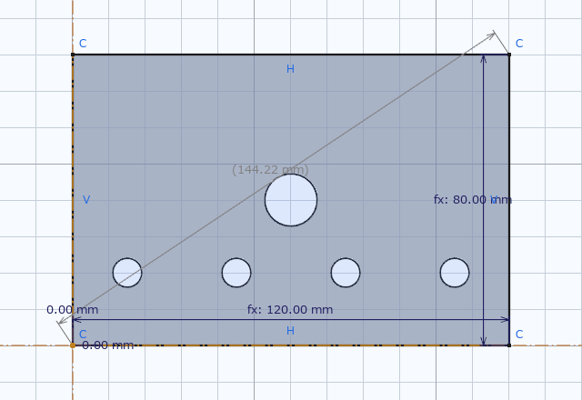
fx: が付きます。従動寸法は括弧付きです。
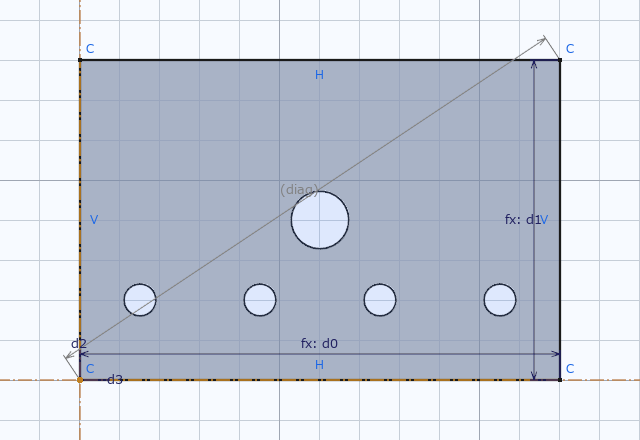
d0・d1…）、従動寸法に付けた名前（diag）が出ます。
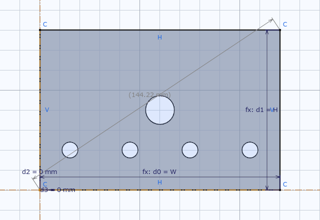
d0 = W のように名前と式が出ます。fx: は、式（ほかのパラメータを参照する式）で値が決まる駆動寸法の印です。定数だけの寸法（0 mm）には付きません。寸法をダブルクリックして出る入力欄には、fx: を含まない式そのものが出ます。
10.9 CSV の書き出しと読み込み
パラメータの表は、CSV で書き出して表計算ソフトで編集し、読み込み直せます。たくさんの値を一度に変えたいときや、設計表にまとめたいときに使います。
書き出す
パラメータの表の［CSV をエクスポート］を押します。
保存先とファイル名を決めます（既定は
parameters.csv）。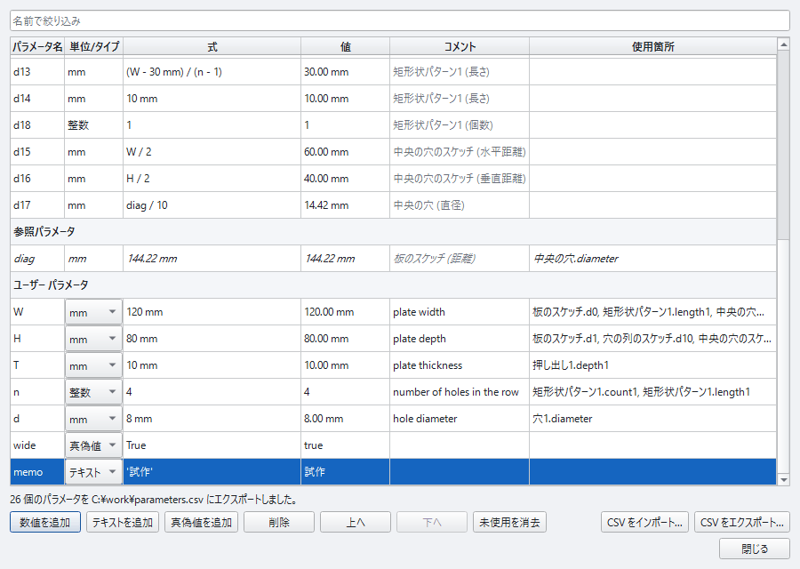
図 10-11 書き出した後。表の下に、件数と保存先が出ます。

文字コードは BOM 付きの UTF-8 です（Excel でそのまま開けます）。見出しの行と、1 パラメータ 1 行です。Unit/Type の列は、画面の表示（［整数］・［真偽値］・［テキスト］）に関わらず、Integer・True/False・Text と書かれます。
Kind,Name,Unit/Type,Equation,Value,Comment
model,d0,mm,W,120.00 mm,
model,d12,Integer,n,4,
reference,diag,mm,144.22 mm,144.22 mm,
user,W,mm,120 mm,120.00 mm,plate width
user,n,Integer,4,4,number of holes in the row読み込む
CSV を編集します。例えば
WのEquationを150 mmに変え、末尾にuser,margin,mm,15 mm,,edge marginの行を足します。パラメータの表の［CSV をインポート］を押し、ファイルを選びます。
表の下に「
インポート: 1 個を追加、1 個を変更しました。」と出て、モデルが再計算されます。
列は見出しの名前で決めます（
Kind・Name・Unit/Type・Equation・Value・Comment）。列の順は問いません。文字コードは UTF-8 と Shift_JIS（CP932）を読めます。userの行は、名前があれば式・型・コメントを変え、無ければ新しく作ります。modelの行は、今ある名前の式を変えます。referenceの行は読み飛ばします。Valueの列は無視します。全部か無かです。1 行でも誤りがあると、何も変えず、行番号つきで理由を出します（「
パラメータのファイルに誤りがあります（行: 理由）: 26: '+' の次元が合いません: 長さ と 角度」）。読み込みは 1 つの Undo の項目です。Ctrl+Z で、追加も変更もまとめて戻ります。
前の行が後の行の名前を読んでいても通ります（追加した行を、前の行から読めます）。
10.10 iProperties
iProperties は、パーツの品番・説明・材料・質量などの情報を持ちます。リボンの［管理］タブ → ［パラメータ］パネル → ［iProperties］で開きます。4 つのタブがあります。入力はすぐ文書に入り、1 つずつ Undo の項目になります。
パラメータの表と同じに、iProperties も開いたまま、ビューやブラウザを操作できます。2 つは同時に開けて、パラメータの表で値を変えると、iProperties の［結果］も読み直されます。
概要・プロジェクト・物理

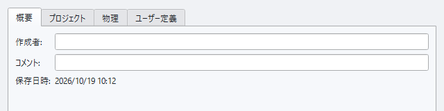

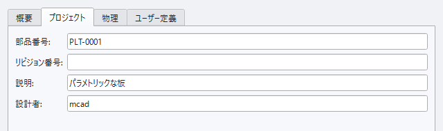

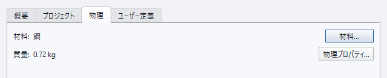
ユーザー定義のプロパティと質量へのリンク
［ユーザー定義］のタブには、自分で名前を付けたプロパティを並べます。列は［名前］・［種類］・［値］・［結果］です。

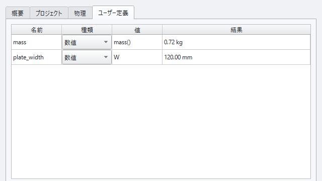
mass はmass()（質量へのリンク）、plate_width は W を読みます。［結果］に、計算した値が出ます。［追加］を押します。
Property1のような行ができます。［名前］・［値］のセルをダブルクリックして入力します。［種類］は、［テキスト］・［数値］・［はい/いいえ］から選びます。
［数値］の値は式です。パラメータの名前（
W * 2）や、次の関数を書けます。［結果］に値が出ます。
| 関数 | 値 |
|---|---|
mass() | 質量（材料の密度を掛けた値） |
volume() | 体積 |
area() | 表面積 |
bbox_x() bbox_y() bbox_z() | 外接箱（軸に平行な箱）の X・Y・Z の大きさ |
cog_x() cog_y() cog_z() | 重心の X・Y・Z の位置 |
body_attr("名前空間", "キー") | プラグインがボディに書いた属性の値。その名前空間のキーを持つボディが 1 つか、全部のボディが同じ値のときだけ値になります。違うときや無いときは、［結果］が［エラー］になります |
［質量にリンク］のボタンを押すと、
Massという名前のmass()の行が足されます（使われていればMass2…）。［結果］は、ワーカーが質量を計算してから出ます（それまでは ［N/A］）。形・材料・パラメータを変えると、追従して変わります。
［種類］を［はい/いいえ］にすると、値は
yes・noです。プロパティは文書に保存されます。構成（第 11 章）ごとに値を変えることもできます。
削除するには、行を選んで［削除］を押します（値を空にしても消えます）。
10.11 次に読む章
パラメータの値を何通りか切り替えて、まとめて書き出すとき: 第 11 章 構成
質量・材料を確かめるとき: 第 12 章 検査
コマンドラインでパラメータの値を指定して書き出すとき: 第 28 章 自動化